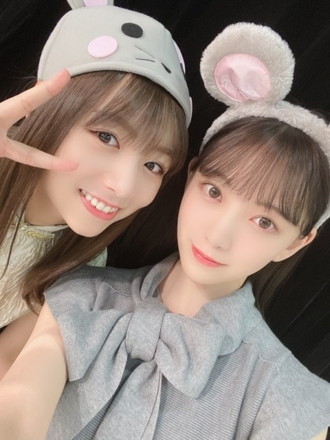

2020/0204Tueこじんまり
こんばんは。
今年は特に料理やお花など
お家でできることを充実させたいなぁと思っています。
岐阜にいた時はまったり何も考えずに生きていたから
人混みにいるとやはり疲れてしまうみたい...
普段も、友達とご飯やお買い物に行ったとしても
出来るだけ早くお家に帰って
23時前にはお布団に入って
沢山寝て...という生活をしているので
私はアウトドア向きでは無いのかなぁと。
ただ単に、家が好きなのもあるんですけれど
家族との時間も、1人の時間も自分の体調も友達との時間も程よくちゃんと、大切にしたいなぁ
24歳になる年、自分と向き合い
落ち着いた豊かな生活をしていきたいです
あ、最近
無添加のミートボールと
無添加無農薬のサラダにハマっています！
美味しいの☺︎
食べていたら愛犬プティくんにジーッと見つめられて困りました...
あげたいけどあげられないんだ。ごめんね。


そして選抜発表がありました。
今回も選んでいただき、嬉しく思います。
ありがとうございます。
そして1期生の方が全員選抜で1列目2列目にいらっしゃいます。
後輩として、背中をみてたくさん学ばせていただきたいですし3.4期生には先輩らしい姿を見せられるようわたしらしく、頑張ります。
これからも乃木坂46をよろしくお願いします。
では！
2020/02/04 19:00
コメント(319)
みおな！
好き！大好き！
頑張って！
選抜おめでとう‼️
嬉しい！
これからも頑張って！！
荒くてごめんなさい…
応援してます！
好き！大好き！
頑張って！
選抜おめでとう‼️
嬉しい！
これからも頑張って！！
荒くてごめんなさい…
応援してます！
とにかく可愛いい。
お疲れ様です。未央奈ちゃん25枚目選抜入りおめでとう!シングル楽しみにしています。たまにマッタリ過ごすのもありですよね!ではおやすみおな。
25シングル頑張って！
こんばんは。
選抜入りおめでとうございます。
体調に気をつけて頑張ってくださいね。
応援しています。
選抜入りおめでとうございます。
体調に気をつけて頑張ってくださいね。
応援しています。
ブ～ン、飛んできましたっ
そうですねっ、未央奈先生が乃木坂に
入った頃にタイムスリップしたような・・・
先輩に甘えちゃってください。
see you！ (^^)/
そうですねっ、未央奈先生が乃木坂に
入った頃にタイムスリップしたような・・・
先輩に甘えちゃってください。
see you！ (^^)/
未央奈お疲れ様！
ブログ更新ありがとう！
料理にお花なんてめっちゃすげー！
料理はおれも結構興味あるんだよ笑
おれも未央奈みたいにバランスの取れた
生活を送りたいよ〜笑
無添加系がハマってるんだね！
おれは全然わからん笑
今回も選抜おめでとう！
ずっと未央奈のこと応援してるからね！
未央奈らしくこれからもがんばれー！
ブログ更新ありがとう！
料理にお花なんてめっちゃすげー！
料理はおれも結構興味あるんだよ笑
おれも未央奈みたいにバランスの取れた
生活を送りたいよ〜笑
無添加系がハマってるんだね！
おれは全然わからん笑
今回も選抜おめでとう！
ずっと未央奈のこと応援してるからね！
未央奈らしくこれからもがんばれー！
未央奈ブログ更新ありがとう！
料理やお花いいね。arでお蕎麦作ってたし料理上手そう。
僕も田舎育ちだから人混みに疲れるのすごくわかる。
寝なくても元気な人もいるけど、それぞれの体質というか、自分に必要な休息ってあるよね。僕も最近早く寝ちゃうことが多いかな。健康で充実した毎日にしたいね。
選抜おめでとう！三列目なのは複雑な気持ちだけど、一期生全員と一緒にまいやんの最後を見送れるって素敵なことだと思う。
これからも未央奈と乃木坂46が大好きです。
ねずみおなも可愛い！
では！
料理やお花いいね。arでお蕎麦作ってたし料理上手そう。
僕も田舎育ちだから人混みに疲れるのすごくわかる。
寝なくても元気な人もいるけど、それぞれの体質というか、自分に必要な休息ってあるよね。僕も最近早く寝ちゃうことが多いかな。健康で充実した毎日にしたいね。
選抜おめでとう！三列目なのは複雑な気持ちだけど、一期生全員と一緒にまいやんの最後を見送れるって素敵なことだと思う。
これからも未央奈と乃木坂46が大好きです。
ねずみおなも可愛い！
では！
ねずみおなちゃんだー！笑
ブログ更新ありがとー！
睡眠と食事は大事だよねー！未央奈ちゃんはダンスとかで運動はバッチリだしね！食事に気をつけるひとって多いけど、睡眠って6時間寝ても1日の1/4だから、結構大事だよねー。食事や運動にお金かけている人は多いけど、睡眠の質を高めるのにお金かけるのも実は大事なのかも？！って考えちゃった
25thシングル楽しみにしてます！乃木坂好きとしても、未央奈ちゃん推しとしても、いちリスナーとしてもねっ！
体調に気をつけてくださいねー！
ブログ更新ありがとー！
睡眠と食事は大事だよねー！未央奈ちゃんはダンスとかで運動はバッチリだしね！食事に気をつけるひとって多いけど、睡眠って6時間寝ても1日の1/4だから、結構大事だよねー。食事や運動にお金かけている人は多いけど、睡眠の質を高めるのにお金かけるのも実は大事なのかも？！って考えちゃった
25thシングル楽しみにしてます！乃木坂好きとしても、未央奈ちゃん推しとしても、いちリスナーとしてもねっ！
体調に気をつけてくださいねー！
未央奈ブログ更新ありがとう
25th選抜入りおめでとう！！一期生全員が福神がすごく感動したな…
ズッキュン王国のツイン未央奈似合ってたよ！
一人の時間って必要だよね、やっぱり未央奈は仕事柄よくその気持ちになりやすいのかな？
今年も早くも2月！今月も頑張ろ！
☺︎
25th選抜入りおめでとう！！一期生全員が福神がすごく感動したな…
ズッキュン王国のツイン未央奈似合ってたよ！
一人の時間って必要だよね、やっぱり未央奈は仕事柄よくその気持ちになりやすいのかな？
今年も早くも2月！今月も頑張ろ！
☺︎
未央奈さん、こんばんは。
選抜おめでとうございます。
麻衣さんを楽しく送ってくださいね。
そして、落ち着いた静かな時間、おっしゃるとおり、美味しいもの食べたり、映画をみたり、乃木坂活動でお忙しいと思いますがぜひ、叶えてください。
選抜おめでとうございます。
麻衣さんを楽しく送ってくださいね。
そして、落ち着いた静かな時間、おっしゃるとおり、美味しいもの食べたり、映画をみたり、乃木坂活動でお忙しいと思いますがぜひ、叶えてください。
みおたんきゃわたん♡
アウトドアは、基本的には日の出日の入りで行動するかと。
たまには夜にたき火で起きているのも良いとは思いますが。
(^-^)
たまには夜にたき火で起きているのも良いとは思いますが。
(^-^)
未央奈ブログありがとう〜
選抜おめでとう
3列目でも頑張ってね
応援してるよぉ
選抜おめでとう
3列目でも頑張ってね
応援してるよぉ
こんばんは～
ブログ更新ありがとうございます✨
料理良いですね✴️
色々な物が造れると楽しいですよ
今回も選抜おめでとうございます✨
１期生がフロント、２列目を占めましたからね
白石さんが最後の選抜ですからね。
今から待ち遠しいです！！
体調崩さず頑張ってください❗
ブログ更新ありがとうございます✨
料理良いですね✴️
色々な物が造れると楽しいですよ
今回も選抜おめでとうございます✨
１期生がフロント、２列目を占めましたからね
白石さんが最後の選抜ですからね。
今から待ち遠しいです！！
体調崩さず頑張ってください❗
未央奈ちゃんブログ更新ありがとう！
選抜入りおめでとう！！ずっと選抜に居続けるのはほんっとうにすごいし、どんなとこでも未央奈ちゃんがキラキラしてて目で追っちゃいます！25枚目期間も全力で応援するね！！
料理とかお花とかほんとにすごいなぁ、、
私は茶道部で和が大好きだから落ち着くってゆうのがめちゃくちゃ共感しました！！！
忙しいと思うけど体調に気をつけて頑張ってね！
選抜入りおめでとう！！ずっと選抜に居続けるのはほんっとうにすごいし、どんなとこでも未央奈ちゃんがキラキラしてて目で追っちゃいます！25枚目期間も全力で応援するね！！
料理とかお花とかほんとにすごいなぁ、、
私は茶道部で和が大好きだから落ち着くってゆうのがめちゃくちゃ共感しました！！！
忙しいと思うけど体調に気をつけて頑張ってね！
未央奈ちゃん、選抜入りおめでとうございます!!
1期生中心のフォーメーションなので、2～4期生は3列目に集中してますが、色々刺激になるのではと思っています。
発売が楽しみです♪☆
1期生中心のフォーメーションなので、2～4期生は3列目に集中してますが、色々刺激になるのではと思っています。
発売が楽しみです♪☆
堀ちゃん、ブログ更新ありがとう。
選抜3列目だったね。
個人的には少し寂しいかな
でも今回ばかりはみんな納得の3列目なのかな？
まあ列はどこでも堀ちゃんを応援する気持ちは変わらないよ。
堀ちゃん寝るの早いね、健康的ですね。
水曜日だけ夜ふかしだね。
自分もワンワン飼ってるけど食事中欲しがるよね、お肉は特にね。
味のついた肉はあげられないからいつもじゃがいも、かぼちゃ、さつまいもを煮たのを用意しておく。
肉をあげるときは1番最後に、最初にあげるとず〜とほしがるからね。
めちゃくちゃ甘やかしてます（笑）
バースデーライブもうすぐだね、楽しみ〜
バイバーイ。
選抜3列目だったね。
個人的には少し寂しいかな
でも今回ばかりはみんな納得の3列目なのかな？
まあ列はどこでも堀ちゃんを応援する気持ちは変わらないよ。
堀ちゃん寝るの早いね、健康的ですね。
水曜日だけ夜ふかしだね。
自分もワンワン飼ってるけど食事中欲しがるよね、お肉は特にね。
味のついた肉はあげられないからいつもじゃがいも、かぼちゃ、さつまいもを煮たのを用意しておく。
肉をあげるときは1番最後に、最初にあげるとず〜とほしがるからね。
めちゃくちゃ甘やかしてます（笑）
バースデーライブもうすぐだね、楽しみ〜
バイバーイ。
未央ちゃんブログ更新有り難うございます。２期生推しの私ですが、素晴らしい選抜だと思いました。でも次回は２期生いっぱい入ってほしいな。それに選抜だけが素晴らしいわけでもないからね。とは言いつつ、２期生も認めてほしいななんて思います。これからも未央ちゃんをはじめ、２期生をコツコツと応援していきたいと思います。未央ちゃん頑張って下さいね。
ブログありがとう！料理やお花、私も春休みだからやろうかなって思ってる！arで料理特集やってるから、それもいつも見てるよ！私も人混みはきらいだなぁーー笑笑 自分の時間大事だよね！毎日人といると疲れちゃうよなぁあ。選抜発表みたよ！3列目で、最初はちょっと衝撃を受けたけど、1期生が福神で、乃木坂の歴史を感じました。2期生がもっと入って欲しかったって思ったりもしたけど、アンダーで、ボーダー組が揃ってるから、曲とか出してほしいなって思った！何を言ってもプレッシャーになっちゃうんじゃないかって思ったけど、私が思ってるのは、みおちゃんのことをどこにいても見つけるし、みおちゃんはどこのポジションでも輝ける人です！大好きです。
ももんが
ももんが
未央奈、ブログ更新お疲れ様でした。
選抜おめでとう！
私もお家大好きですw
選抜おめでとう！
私もお家大好きですw
ブログ更新ありがとう。未央奈ちゃん25thの選抜入りおめでとう！無添加のミートボールやお野菜美味しそう！またブログにコメントするね。
25枚目シングル選抜入りおめでとうございますッ
3列目で呼ばれた時「えっ、」ってなったけど
これからの未央奈ちゃんの活躍に期待してるし、
応援してます！！
握手会やライブ行くのでこれからも頑張ってください！！
3列目で呼ばれた時「えっ、」ってなったけど
これからの未央奈ちゃんの活躍に期待してるし、
応援してます！！
握手会やライブ行くのでこれからも頑張ってください！！
未央奈さん、こんばんは。
裸足でSummer以来の三列目かな。ちなみにこの楽曲で僕は乃木坂を認知しました。それは置いといて。
選抜おめでとう〜。
これからの乃木坂46、2期生、堀未央奈の変化を受け入れていくよ。シングル楽しみにしてます。
裸足でSummer以来の三列目かな。ちなみにこの楽曲で僕は乃木坂を認知しました。それは置いといて。
選抜おめでとう〜。
これからの乃木坂46、2期生、堀未央奈の変化を受け入れていくよ。シングル楽しみにしてます。
未央奈ブログ更新ありがとうー！
今は寒いし家での時間もいいよねっ！
沢山寝て沢山食べてゆっくり休んでね！
25枚目選抜入りおめでとぉーーー！！！！
今回もどんな曲になるか今からワクワクする！
楽しみにしてるねっ！
バスラもちかづいてるよね〜(^｡^)
早くステージで踊って笑ってる未央奈見たいなぁ〜！
写真集もあるし本当に楽しみっ！
風邪とかウイルスとか流行ってるから体調には気をつけてね！
次のブログも楽しみにしてるねっ！
今日もお疲れ様！
今は寒いし家での時間もいいよねっ！
沢山寝て沢山食べてゆっくり休んでね！
25枚目選抜入りおめでとぉーーー！！！！
今回もどんな曲になるか今からワクワクする！
楽しみにしてるねっ！
バスラもちかづいてるよね〜(^｡^)
早くステージで踊って笑ってる未央奈見たいなぁ〜！
写真集もあるし本当に楽しみっ！
風邪とかウイルスとか流行ってるから体調には気をつけてね！
次のブログも楽しみにしてるねっ！
今日もお疲れ様！
こんばんは。
無添加無農薬だとやっぱり違うのかな？
プティくんのエピソード可愛すぎるよ(笑)
さて、今回のシングルも選抜入りですね。
まずは、おめでとう！
１期生全員福神っていうのはビックリした
そのなかで、選抜に選んでもらえたみおなもすごい！
この機会にいろんな事を吸収して、２期生に選抜のバトンを繋げてほしいなぁと思ってます。
みおなセンター見たいなぁ～
まだまだ応援してます
では✋
無添加無農薬だとやっぱり違うのかな？
プティくんのエピソード可愛すぎるよ(笑)
さて、今回のシングルも選抜入りですね。
まずは、おめでとう！
１期生全員福神っていうのはビックリした
そのなかで、選抜に選んでもらえたみおなもすごい！
この機会にいろんな事を吸収して、２期生に選抜のバトンを繋げてほしいなぁと思ってます。
みおなセンター見たいなぁ～
まだまだ応援してます
では✋
未央奈ブログ更新ありがとう！
25枚目も頑張ってね！
何列目でも未央奈は輝いてるよ！
25枚目も頑張ってね！
何列目でも未央奈は輝いてるよ！
まだ諦めれない そこに道がある限り
未央奈ちゃんこんばんは。
ブログあげてくれてありがとう。
25枚目の選抜おめでとう
1期生が福神の曲が取っても楽しみです。
まいやん、さゆにゃんへの熱い思いを胸にがんばってください。
ずっとずっと応援しています。
大好きです。
ごきげんよう
ブログあげてくれてありがとう。
25枚目の選抜おめでとう
1期生が福神の曲が取っても楽しみです。
まいやん、さゆにゃんへの熱い思いを胸にがんばってください。
ずっとずっと応援しています。
大好きです。
ごきげんよう
みおちゃんブログありがとう。
みおちゃんも24歳なのかあ…
時の流れは早い。
お互い「今」を精一杯楽しもうね！
そして、選抜発表。
3列目で発表された時はとても驚きました。
でも意味のあるフォーメーションなのかなとも思います。
みおちゃんがどこにいてもガン見です 笑
25枚目もみおちゃんにとって実りある活動になりますように。
心から応援しています。
みおちゃんも24歳なのかあ…
時の流れは早い。
お互い「今」を精一杯楽しもうね！
そして、選抜発表。
3列目で発表された時はとても驚きました。
でも意味のあるフォーメーションなのかなとも思います。
みおちゃんがどこにいてもガン見です 笑
25枚目もみおちゃんにとって実りある活動になりますように。
心から応援しています。
ブログありがとう〜！
選抜おめでとう！
後ろから1期生を支えてね！
まいやんラストシングルを最高のものにしてください！
楽しみにしてます！
選抜おめでとう！
後ろから1期生を支えてね！
まいやんラストシングルを最高のものにしてください！
楽しみにしてます！
未央奈！！ブログ更新ありがとう
今回は3列目になってしまって悔しいと思ったかもしれないけど未央奈らしくやってれば次はいい位置につける！と思ってれば絶対大丈夫だよ！！
だから未央奈にできることをまいやんとかさゆにゃんにしてあげてね。
体調に気をつけて頑張ってね！！ずっと応援してるからね
今回は3列目になってしまって悔しいと思ったかもしれないけど未央奈らしくやってれば次はいい位置につける！と思ってれば絶対大丈夫だよ！！
だから未央奈にできることをまいやんとかさゆにゃんにしてあげてね。
体調に気をつけて頑張ってね！！ずっと応援してるからね
未央奈ちゃん選抜入りおめでとう。早く会いたいな。2期生単独ライブも楽しみです。絶対行きたいよ。前々から予言してたから。笑。3期4期ライブの頃2期生ライブやらないかな〜って思っていた矢先におきた出来事だよ。今から楽しみに待ってます。
未央奈選抜入りおめでとー頑張ってねー
確かに家で家族とまったりする時間も大切だよねー
これからも頑張ってねー
確かに家で家族とまったりする時間も大切だよねー
これからも頑張ってねー
ブログ更新お疲れ様です！！
インスタ毎日見て癒されてます！
選抜おめでとう！
これからも頑張ってください！
インスタ毎日見て癒されてます！
選抜おめでとう！
これからも頑張ってください！
未央奈ちゃんブログ更新ありがとう！
こじんまりとするのもいいよね ^ ^
その気持ちすごくわかる！
そして選抜入りおめでとう！
どんな場所でもキラキラ輝いている姿が素敵です！
これからも応援しています（＾ν＾）
明日はレコメン絶対に聴くね！楽しみ！！
最近風邪が流行ってるけど体調に気をつけてね！
こじんまりとするのもいいよね ^ ^
その気持ちすごくわかる！
そして選抜入りおめでとう！
どんな場所でもキラキラ輝いている姿が素敵です！
これからも応援しています（＾ν＾）
明日はレコメン絶対に聴くね！楽しみ！！
最近風邪が流行ってるけど体調に気をつけてね！
未央奈ちゃん♡体調に気を付けてこれからもがんばってね！！
ますます美しくなってきたね。
納品ウォーズの未央奈にハートを撃ち抜かれた。元陸上部ってすごいね。短距離走?それとも長距離走?
納品ウォーズの未央奈にハートを撃ち抜かれた。元陸上部ってすごいね。短距離走?それとも長距離走?
堀ちゃんブログありがとう！
選抜メンバーおめでとうございます
早く新曲が聞きたくて楽しみです
選抜メンバーおめでとうございます
早く新曲が聞きたくて楽しみです
しっかり寝るのは大事なことだよね
選抜おめでとう
今回は一期生の背中を見ながらですが多くの後輩が未央奈さんの背中も見ていると思います
いい作品期待しています
選抜おめでとう
今回は一期生の背中を見ながらですが多くの後輩が未央奈さんの背中も見ていると思います
いい作品期待しています
選抜おめでとう！！！
まいやんとの最後のシングルになるけど、いっぱい思い出つくっておいでね
楽しみに待っとるよ～
まいやんとの最後のシングルになるけど、いっぱい思い出つくっておいでね
楽しみに待っとるよ～
選抜おめでとう！
今回の選抜は一期生がみんな揃っていて素敵だよね。先輩たちの背中を見れる機会も減っていってしまうね。いつか二期生がみんな選抜で揃う日が来るといいなー。
まいやん、さゆ、琴子のラストでもあるし、思い出たくさん作ってね！
今回の選抜は一期生がみんな揃っていて素敵だよね。先輩たちの背中を見れる機会も減っていってしまうね。いつか二期生がみんな選抜で揃う日が来るといいなー。
まいやん、さゆ、琴子のラストでもあるし、思い出たくさん作ってね！
未央奈～ こんにちは
ブログ更新ありがとうございます。
「らじらー」、おつかれさまでした。みなみがいなかった分、未央奈のお惚けぶりというか、「そんなバカな」はホント大笑いしてしまいました。みなみの「おこだぞ！」も聞こえてきそうですが‥‥。
さて、８ｔｈのバスラのチケットが゛届きました。全ツーのナゴヤドームでは、５階席続きだったのですが、今回はまずまずの席となりました。今から楽しみでなりません。未央奈にとっても、ナゴヤドームは準地元、ご活躍、お祈りしております。
２５ｔｈの選抜発表でしたね。まいやん・さゆにゃん卒業曲として、安心して送り出せるように盛り上げていってくださいね。
ブログ更新ありがとうございます。
「らじらー」、おつかれさまでした。みなみがいなかった分、未央奈のお惚けぶりというか、「そんなバカな」はホント大笑いしてしまいました。みなみの「おこだぞ！」も聞こえてきそうですが‥‥。
さて、８ｔｈのバスラのチケットが゛届きました。全ツーのナゴヤドームでは、５階席続きだったのですが、今回はまずまずの席となりました。今から楽しみでなりません。未央奈にとっても、ナゴヤドームは準地元、ご活躍、お祈りしております。
２５ｔｈの選抜発表でしたね。まいやん・さゆにゃん卒業曲として、安心して送り出せるように盛り上げていってくださいね。
みおな

らじらーで新境地開拓おめ
こりゃあ忙しくなるぞ〜
未央奈推しの女性が生ちゃん推しのお母様とバスラ2日目（生ちゃん不在だが）当たったんで、有給取って東京から行くって言ってた
握手会も未央奈レーンいつも行ってんだって言ってたよ
しても、あくまで自分が仕事で会った（相当数）限りでは、推しとファンてタイプ似んのか、未央奈推しは海外好きな色白で細くて仕事できる系が多い氣する...
こりゃあ忙しくなるぞ〜
未央奈推しの女性が生ちゃん推しのお母様とバスラ2日目（生ちゃん不在だが）当たったんで、有給取って東京から行くって言ってた
握手会も未央奈レーンいつも行ってんだって言ってたよ
しても、あくまで自分が仕事で会った（相当数）限りでは、推しとファンてタイプ似んのか、未央奈推しは海外好きな色白で細くて仕事できる系が多い氣する...
選抜おめでとう!
頑張ってね!
頑張ってね!
堀ちゃんが２４歳って、どんだけ月日が経ったんだって恐ろしくなる笑
また、ゾンビ未央奈観たい！！笑
また、ゾンビ未央奈観たい！！笑
未央奈ちゃん、こんばんは〜
選抜おめでとう。
何を言ったらいいんだろう・・・
何が良くて、何が悪いのか。
まいやん、さゆにゃんのラスト。
記憶に残るものであって欲しいな。
犬のおねだり目線はヤバいよね。
あれ絶対ビーム出てるから（笑）
あっ、ひめたんビーム級だよ。
今日も推しでいる事が幸せです。
では。
選抜おめでとう。
何を言ったらいいんだろう・・・
何が良くて、何が悪いのか。
まいやん、さゆにゃんのラスト。
記憶に残るものであって欲しいな。
犬のおねだり目線はヤバいよね。
あれ絶対ビーム出てるから（笑）
あっ、ひめたんビーム級だよ。
今日も推しでいる事が幸せです。
では。
堀ちゃん選抜入りおめでとう
毎週レコメンきいてます！
これからも応援しています
毎週レコメンきいてます！
これからも応援しています


乾燥してますがおかわりありませんか？
こじんまり、可愛いらしい響きですよね。
大きなものより、身近なものを求めていくのは良いですね。
お家だろうと自分磨き素敵ですよ。
人混みは、色々と問題ありますからね...
友達とご飯やお買い物など、楽しいと感じる瞬間もあるでしょうから、アウトドア向ではないと決めつけなくても良いと思いますよ。
ただお家、家族を守りたいという素敵なかけがえのない気持ちが大きいのでしょうね。
偏り過ぎるのはほどほどに、色々と向き合って大切なものを守って欲しいです。
お忙しいと思いますが、それが内面磨きにも繋がると思います。
プティくんは、ミートボールに反応してたのかな？
可哀想ですが、あげられるませんよね。
我が家の愛犬ジョンくんにも自分の食事中によく見つめられ、切なくなります。
焼き芋や茹でた味付け無しキャベツやもやしで我慢してもらいます。
可愛い写真をありがとうございます。
癒しのコレクションが増えて幸せで星
25thシングルの選抜入りおめでとうございます。
ある程度予想してましたが、ここまでとは驚きました...
前向きに捉えないとですね。
明日の乃木坂のためにも繋げないとですね。
楽しみましょうね。
明日の水曜日は、昼間そこそこ暖かいみたいですが、夜は結構冷えてくるようなので、レコメンの行き帰りや最中も温もりに包まれて下さいね。
お身体に気をつけて。
頑張って行きましょう。